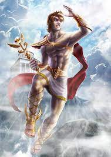

Hermes
DIEU DES COMMERCANTS, DES VOYAGEURS ET DES VOLEURS
-
Nom romain : Mercure
Etymologie : « interprète »
Père : Zeus
Mère : Maia
-
Hermes est un dieu genial, malicieux et audacieux (voir rusé): il est connu pour etre le messager des Olympiens mais
aussi le protecteur des voyageurs, des commercants et des... voleurs. Il invente toutes sortes d'instruments et est
la divinité qui apparait le plus souvent dans les mythes, d'ordinaire pour aider les héros.
-
-
Dès la première nuit de sa naissance, Hermès sauta de son berceau et alla voler les bœufs sacrés d'Apollon
(qu'il eut la bonne idée de faire marcher à l’envers pour qu’on ne puisse pas suivre leurs traces). Se faisant
surprendre par un berger, il acheta son silence avec un bovidé, puis, ravi de ses dons délictuels, il déclara
à sa mère que voleur était le meilleur des métiers et qu’il serait leur dieu. Et, il retourna dormir dans son
berceau.
-
Apollon, furieux du vol de ses bœufs, ne tarda pas à soupçonner le petit coupable. Hermès nia : voleur + menteur,
quel talent ! Le berger dont il avait acheté le silence le dénonça. Mais Hermès rebondit à merveille : il offrit
au dieu de la musique sa lyre, un instrument qu'il venait juste d‘inventer avec une carapace de tortue… Cela marcha
: Apollon fut ravi et fit la paix. Hermès devint ainsi, également, dieu des Marchands.
-
Hermès était un peu un dieu à tout faire, messagers des dieux, voleurs, commerçant … ! Un de ses attributs était
particulièrement prestigieux aux yeux des familles endeuillées : il était psychopompe, c'est-à-dire qu'il conduisait
les âmes vers les Enfers. Il lui est même arrivé de faire sortir une âme du royaume des morts par faveur de Zeus.